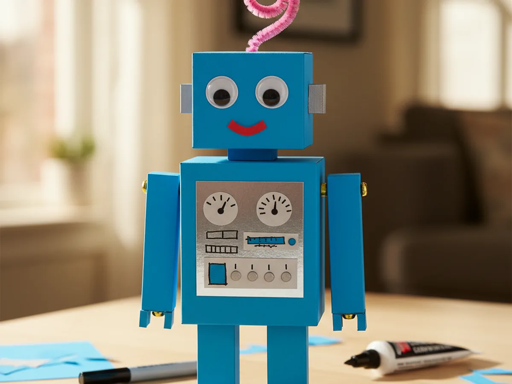
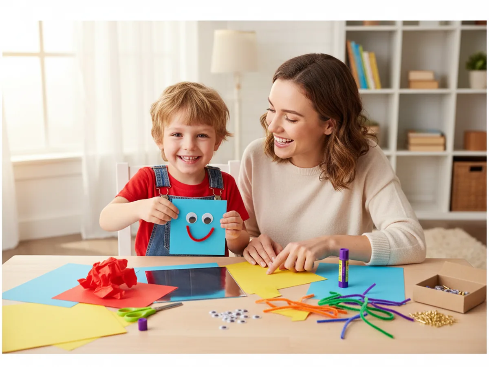
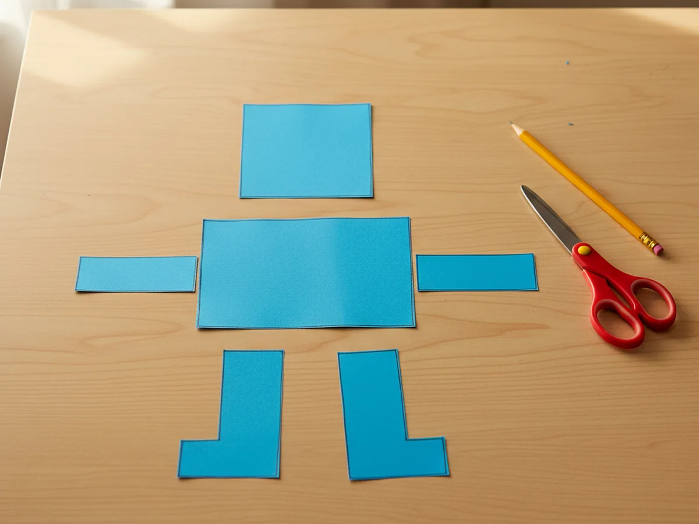
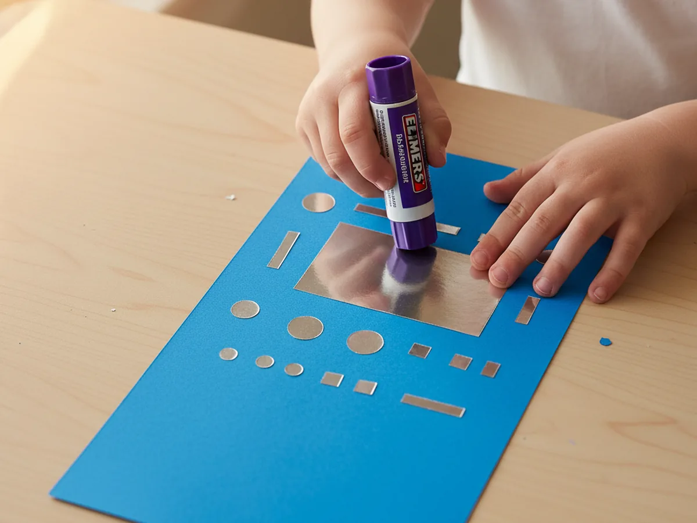
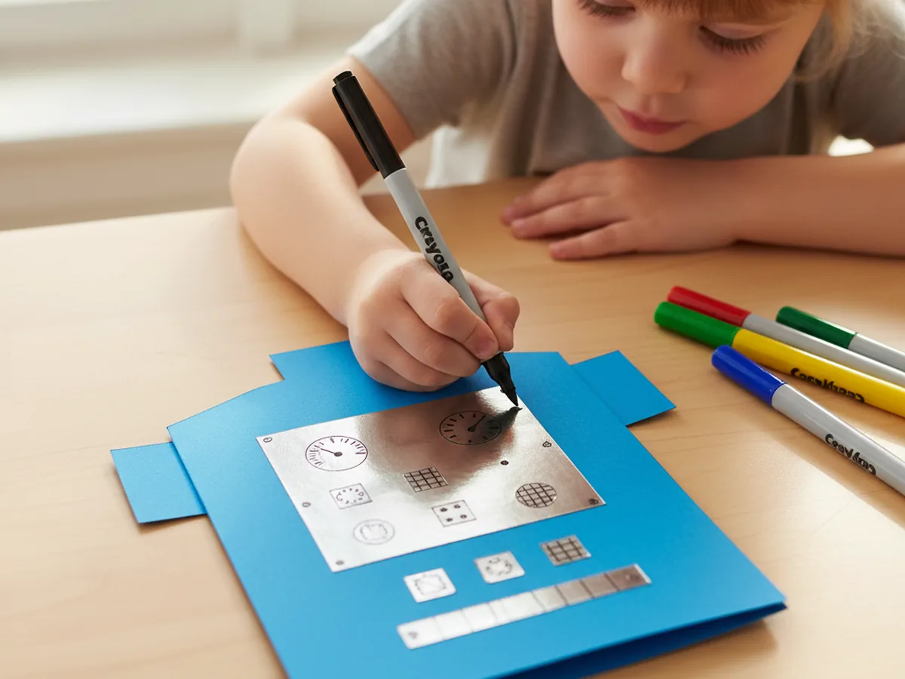
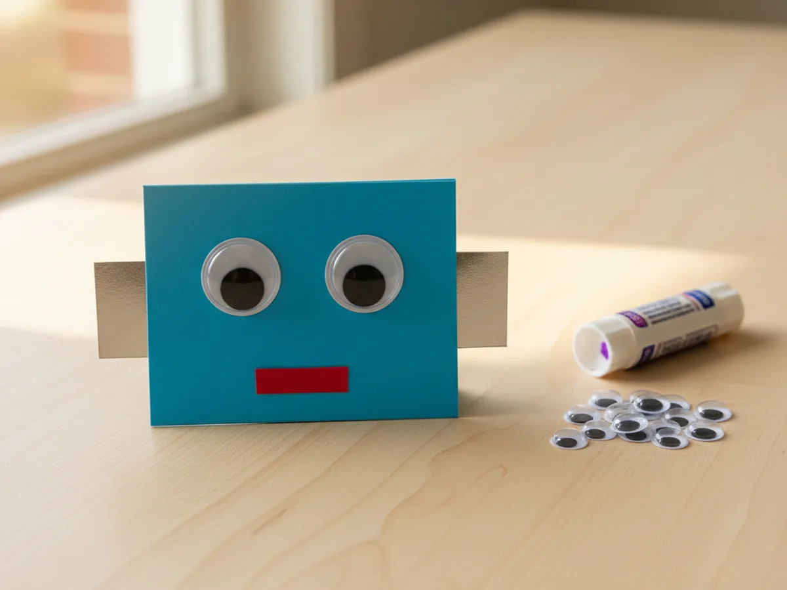
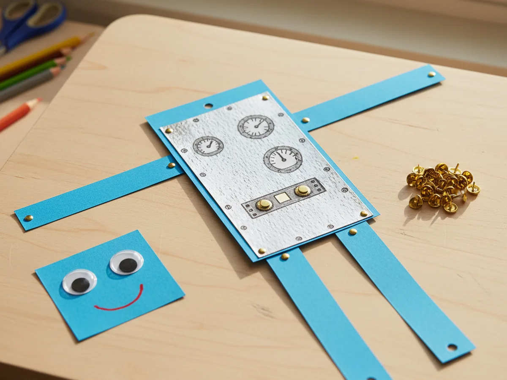
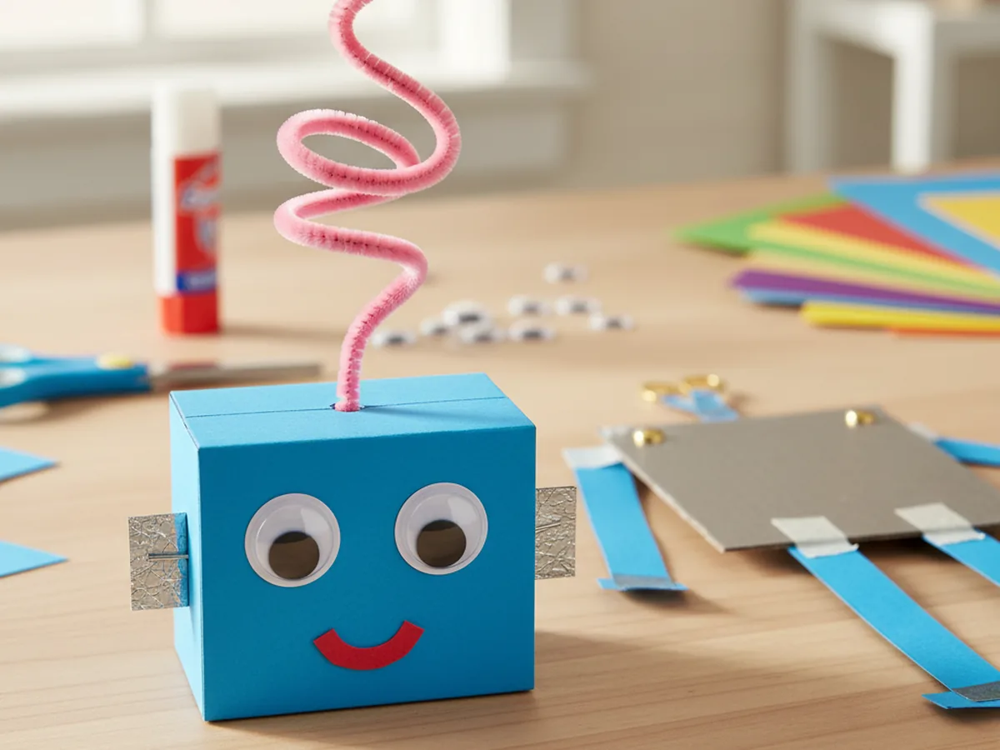
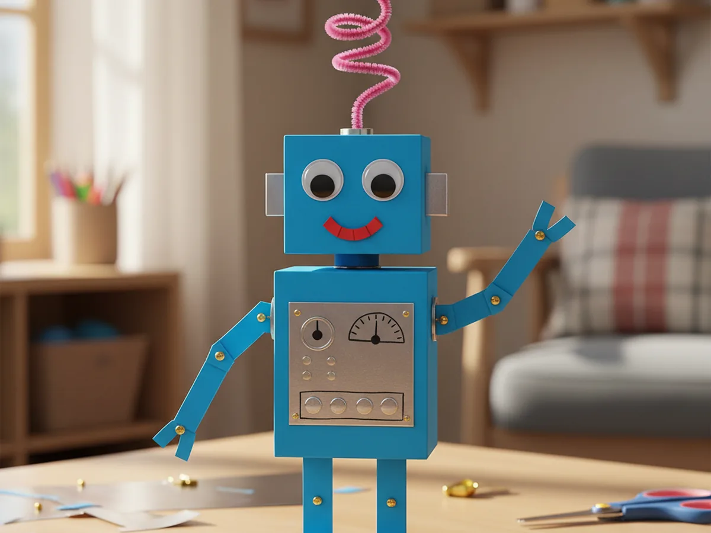

This little paper robot craft is one of those projects that feels like pure magic to kids. You cut a few cardstock shapes, glue on shiny silver details, add googly eyes, and finish with brads that let the arms and legs actually swivel. The whole thing comes together in about 45 minutes at the kitchen table, and at the end your child is holding a posable robot they made entirely with their own hands. 🤖
It is calm, low-mess, and beginner-friendly enough for a 4 year old with a little help. Older kids can build the entire paper robot craft on their own, while toddlers can join in by sticking on the googly eyes and pressing down the buttons. Either way, the finished robot has personality, character, and usually a name within five minutes of being built.
Why Kids Love This Craft
Robots are pure imagination fuel. The moment a child realizes they are about to build their very own little robot from paper, the excitement is real. There is something about a friendly, slightly silly handmade robot that makes kids want to give it a name, invent a backstory, and parade it around the house. By the time the antenna goes on top, your child usually already has a whole imaginary world ready for their new metal friend.
This paper robot craft for kids also gently builds real skills along the way. Cutting rectangles and squares from cardstock supports scissor practice. Gluing on the small silver buttons and dials helps with focus and fine motor control. The brads that hold the arms and legs in place are surprisingly satisfying to push through paper, and they teach kids how a real fastener works. Bending the pipe cleaner antenna into a curl or a spiral feels like a tiny engineering moment.
Best of all, every easy paper robot craft looks different. Some kids want a tall thin robot, some want a chunky little square robot, some give theirs three eyes and a giant smile. There is no wrong way to build a paper robot, and that freedom is exactly what makes children so proud of the one they made. By the end, you will hear, "Look mommy, this is my robot, his name is Bolt and he is friendly." That is the kind of moment that stays with both of you.

What You'll Need
Here is everything you need to build this paper robot craft at home, and most of it is probably already in your craft drawer.
- Astrobrights Cardstock, 65 lb Bright Assortment, sturdy enough for a robot body that holds its shape
- Silver Metallic Cardstock, 30 sheets 12x12, for the shiny chest plate, buttons, and dials that make the robot look real
- Crayola Construction Paper, 240 ct, for small color accents like the mouth, ears, or backup body parts
- Elmer's Disappearing Purple Glue Sticks, 4 pack, easy for little hands and dries clear so no white residue shows on the robot
- Fiskars Blunt-Tip Kids Scissors, safe for ages 4 and up and just right for cutting cardstock rectangles
- Crayola Broad Line Markers, for drawing dials, gauges, and gear lines on the silver panels
- UPINS Self-Adhesive Googly Eyes, 1000 ct, peel-and-stick eyes that bring the robot face to life instantly
- Mini Brad Fasteners, 200 pack, the magic ingredient that makes the arms and legs swivel and pose
- Creativity Street Chenille Stems, 100 pack, perfect for a curly antenna on top of the robot's head
- A pencil and a ruler, optional for drawing straight lines before cutting
Step-by-Step Instructions
Take it one calm step at a time and your child will have a little robot friend in about 45 minutes. Let them help with every part, even if they just pick the colors or press the brads flat.
Step 1: Cut the Robot Body Shapes
Start with the body. Pick a bright cardstock color your child loves and cut a tall rectangle about 5 inches wide by 6 inches tall for the torso. From the same color or a coordinating one, cut a smaller square about 4 inches by 4 inches for the head. Then cut two long thin rectangles about 1 inch by 4 inches for the arms, and two thicker rectangles about 1.5 inches by 3 inches for the legs. These six shapes are the entire skeleton of your paper robot craft, and you do not need them to be perfect.

Step 2: Add the Shiny Robot Details
Now for the part that makes the robot look like a real robot. Cut a small silver metallic rectangle about 3 inches by 2 inches for the chest control panel and glue it onto the center of the torso. Then cut a few small silver circles, squares, and tiny rectangles to glue on as buttons, knobs, screens, and a chest gauge. Two or three little silver pieces on the head also look adorable as side bolts or ear panels. Press each piece down firmly with the glue stick.

Step 3: Decorate the Body with Markers
Once the silver pieces are glued down, hand your child a few markers and let them turn the panels into real-looking robot controls. A few small circles inside the silver buttons, a wavy line for a screen reading, a clock face on one of the round dials, and a few crisscross lines on the chest plate all add personality fast. Encourage your child to keep going until the cute paper robot craft looks like it could really beep, blink, and ding.

Step 4: Add the Face
Now for the moment that always makes kids gasp. Stick two large self-adhesive googly eyes onto the head square. Add a small construction paper rectangle or oval for the mouth and glue it under the eyes. If you want, cut two small silver squares for ears on either side of the head. The minute the eyes are on, your paper robot craft stops being paper and becomes a little character with a personality, and your child will name it within seconds. 💛

Step 5: Attach Arms and Legs with Brads
This is the most exciting part of the whole project. Punch a small hole at the top of each arm and at the top of each leg using the sharp point of a pencil or a small hole punch. Then punch matching holes on the sides and bottom of the torso. Push a mini brad through each arm and leg into the body, and gently spread the metal prongs flat on the back. Now the arms swing up and down and the legs can be posed in different positions. Your easy paper robot craft is officially movable.

Step 6: Add a Pipe Cleaner Antenna
Punch one more small hole at the very top of the head square. Push a pink, blue, or rainbow pipe cleaner halfway through the hole and bend the bottom over on the back so it stays in place. Then curl the top end into a fun spiral, a zigzag, or a small loop. The antenna is the finishing flourish that turns a friendly square into a full robot.

Step 7: Pose and Display the Finished Paper Robot Craft
Now glue the head onto the top of the torso, bend the brad arms into a wave, and pose the legs. Stand your child's paper robot craft on a shelf, the kitchen table, or proudly tape it onto the fridge. Most kids will want to hold their robot for the rest of the afternoon, give it a name, and introduce it to every stuffed animal in the house. ✨

Variations to Try
Recycled Box Robot: Skip the cardstock and build a 3D robot using a small empty cereal box for the body, a tissue box for the head, and toilet paper rolls for the arms and legs. Cover them with paint or wrapping paper, then add the same silver details, googly eyes, and pipe cleaner antenna. This version is perfect for older kids who want to play with their robot for weeks.
Glow-in-the-Dark Space Robot: Decorate the silver chest plate with glow-in-the-dark stars and stickers, swap the bright cardstock for navy blue, and add small white star dots on the body. The result feels like a tiny robot exploring space, and it lights up beautifully when the lights go off at bedtime. 🌟
Mini Magnet Robot: Make a small version about half the size and tape a craft magnet to the back of the torso. Once finished, your child can stick their tiny robot directly onto the fridge as a permanent display piece, joined later by a whole robot family.
Final Thoughts
A simple paper robot craft is one of those projects that proves you do not need batteries or screens to spark real wonder. A few rectangles of cardstock, some silver paper, and a handful of brads is enough to turn an ordinary afternoon into a tiny invention session. The real win is the moment your little engineer holds up their robot, gives it a name, and says, "Look mommy, I built him." That is the kind of small magical moment that stays with both of you. Happy crafting, mama.
More Crafts You'll Love
If your family enjoyed building this paper robot, here are two more sweet imaginative paper crafts to try next.